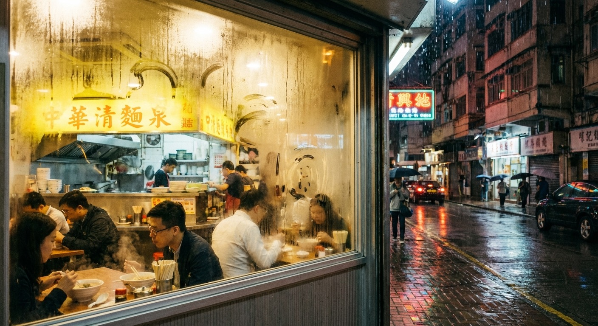
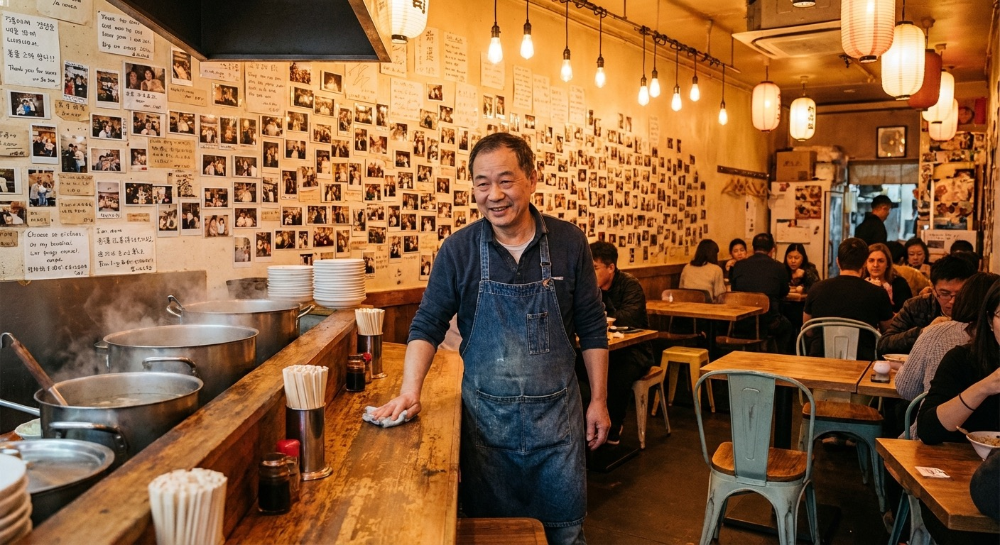

📝 全部评价（2847条）
—— 2023年6月 · 刚开业 ——
加班到凌晨一点，发现隔壁新开了家面馆。老板是个四十多岁的大叔，说是下岗后拿积蓄开的。面的味道一般般，但胜在便宜量大，而且老板看我一个人吃面，多给了个卤蛋。就冲这份实诚，以后常来。
👍 12 💬 3
我的项目今天死了。合伙人跑了，把公司账户上最后的钱也转走了。
坐在面馆里发呆，老王端来一碗面，说"先吃"。
我说我没钱了。他说没事，什么时候有什么时候给。
后来我在面馆坐到了天亮。老王也没赶我。
👍 847 💬 126
—— 2024年3月 · 口碑慢慢起来 ——

天使轮终于过了。签完协议出来已经凌晨两点，拉着投资人说"我请你吃个面"。
投资人一脸懵逼地跟我走进了这家苍蝇馆子。
点了两碗牛肉面。投资人吃完说："这是我投过最好吃的面。"
我差点哭出来。不是面好吃，是熬了两年终于有人信我了。
👍 2.1k 💬 334
今天被裁了。35岁，大厂产品经理，说裁就裁。
走进面馆的时候已经哭得稀里哗啦。老王什么也没说，多放了两勺辣椒。
他说："辣的时候哭，别人看不出来。"
这碗面我吃了一个小时。这句话我可能记一辈子。
👍 5.7k 💬 891
—— 2025年1月 · 三年了 ——

老王，我回来了。
上次来吃面是2023年8月，那天我的公司刚死掉，欠你一碗面钱。
今天我带了50个人来。对，就是我新公司的全部员工。刚完成B轮融资。
我跟他们说，当年最难的时候，是一碗面和一句"什么时候有什么时候给"救了我。
老王你今天别收钱了，50碗面我请。
还有，两年前那碗面的钱，我还你。连本带利，够你再开三家店的。
👍 12.8k 💬 2047 · 🏆 年度最佳评价
小张啊，面钱我不要。
你还我的，比面钱值钱多了。
你让我知道，下岗之后开面馆这件事，也没白干。
👍 8.4k 💬 967